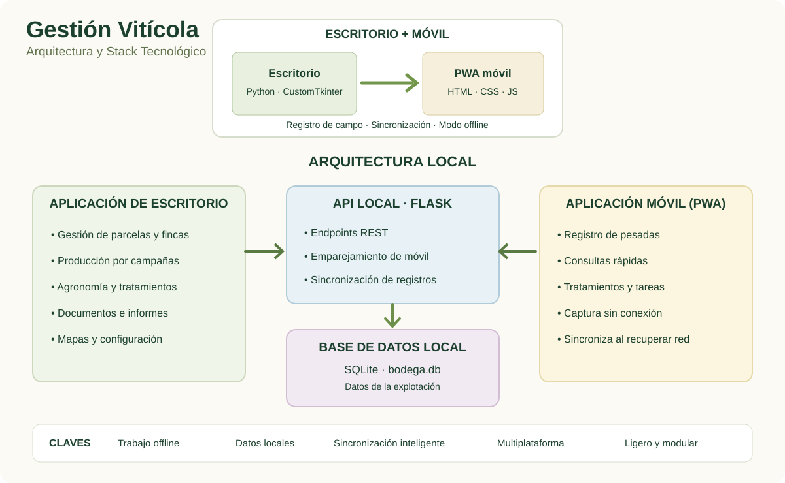

Fincas y cartografía
Organiza parcelas y subparcelas, consulta geometrías y relaciona la información territorial con la gestión de la explotación.
Parcelas, producción y vendimia en un mismo lugar. Una aplicación de escritorio para gestionar la explotación y una herramienta móvil para trabajar directamente desde la viña o la bodega.

La gestión vitícola no es una sola tarea. Es la suma de decisiones agronómicas, producción, documentación y trabajo diario. El software las conecta alrededor de las parcelas y las campañas.
Organiza parcelas y subparcelas, consulta geometrías y relaciona la información territorial con la gestión de la explotación.
Registra pesadas desde el móvil, asígnalas a su parcela y mantén al día la producción acumulada y el histórico.
Análisis de suelo, historial y apoyo a la planificación de abonado.
Organización de tratamientos fitosanitarios y seguimiento de los trabajos de campo.
Documentos y facturas organizados para consultar la información cuando hace falta.
Visualización de datos, comparativas entre campañas y exportaciones para analizar resultados.
Durante años, el trabajo no terminaba al acabar la jornada: tocaba revisar tickets, pasar kilos y actualizar la producción en el ordenador. El modo vendimia acerca ese registro al momento en que sucede.
La prioridad no es usar la tecnología más sofisticada, sino escoger una arquitectura que encaje con una explotación: datos locales, gestión en escritorio y acceso móvil cuando estás trabajando fuera.

La primera versión de Gestión Vitícola era completamente local. Tenía sentido: toda la información estaba en el ordenador y desde allí podía gestionar parcelas, producción, documentos y el resto de tareas.
Hasta que llegó la primera consulta desde la viña. ¿De qué sirve tener toda la información en el ordenador de casa si, cuando estás trabajando en el campo, necesitas consultarla desde el móvil?
Probé a llevar la aplicación a la nube para poder acceder desde cualquier lugar. Pero la cobertura no siempre acompaña y mantener una infraestructura remota también tiene un coste.
Por eso la arquitectura actual combina una aplicación de escritorio con una PWA móvil. La gestión sigue teniendo un núcleo local, mientras el móvil permite consultar y registrar información en el campo, incluso cuando no hay conexión.
Este proyecto nació de una necesidad propia. Ahora la vendimia sirve para comprobar si la tecnología consigue lo importante: ahorrar pasos, evitar transcripciones repetidas y dejar más tiempo para el trabajo que realmente importa.
Leer las publicaciones del proyecto